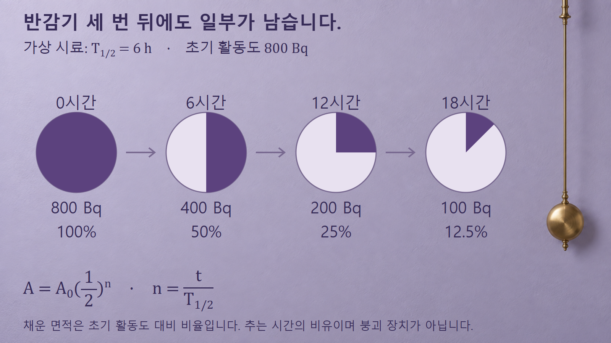
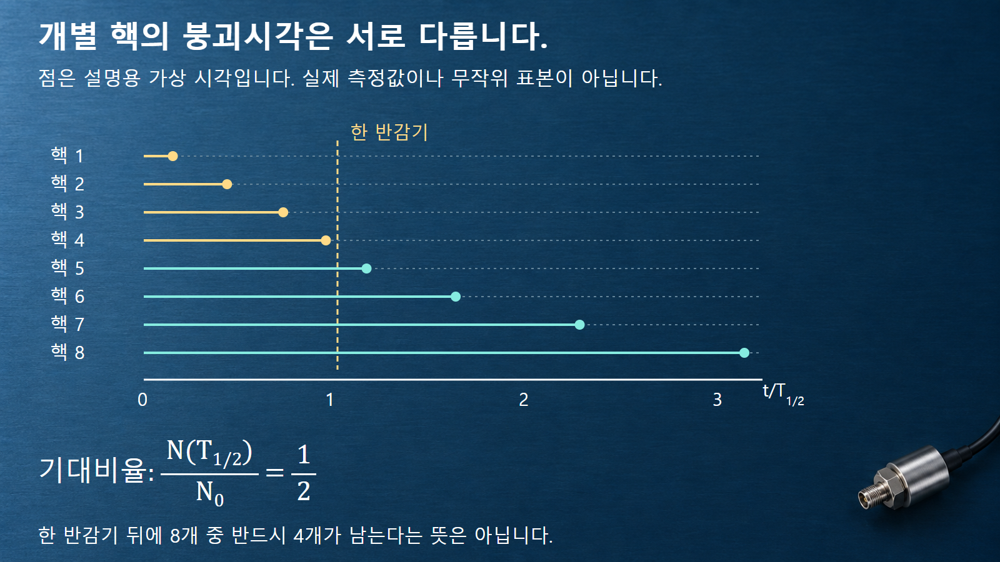

방사성붕괴와 시간 · 050
반감기
절반이 남는 시간과 개별 핵의 확률
반감기는 집단의 시간척도입니다. 세 반감기 뒤의 활동도를 계산하고, 평균수명·초기량·개별 붕괴시각과의 차이를 살펴봅니다.
절반이 되는 집단의 시간척도
물리적 반감기 T1/2는 같은 방사성 핵종의 남은 핵수 또는 활동도가 처음의 절반이 되는 시간척도입니다. [1] 이 글에서는 단일 핵종·일정한 붕괴상수·외부 공급과 제거가 없는 조건을 가정합니다.
큰 집단의 평균적인 변화로 읽어야 하므로 핵 몇 개만 가진 시료에서는 정확히 절반씩 나뉘지 않을 수 있습니다. 한 핵이 반감기만큼 기다린 뒤 반드시 붕괴하는 것도 아닙니다. 반감기는 집단의 잔존비율을 비교할 때 편리한 기준입니다.
핵종과 상태를 바꾸지 않고 시료의 양만 두 배로 늘려도 반감기는 같지만 활동도는 달라집니다. 반감기와 초기 핵종재고는 각각 시간척도와 출발량을 정하므로 두 값을 함께 알아야 특정 시각의 활동도를 계산할 수 있습니다.
붕괴상수와 반감기의 역관계
지수감소식에서 t=T1/2일 때 남는 비율을 1/2로 놓으면 e−λT1/2=1/2입니다. 양변에 자연로그를 취하면 λT1/2=ln 2가 되어 T1/2=(ln 2)/λ≈0.693147/λ입니다. [2]
λ가 크면 남은 핵 하나가 짧은 시간에 붕괴할 경향이 커서 반감기는 짧아집니다. 반대로 λ가 작으면 반감기는 길어집니다. λ를 h−1로 대입하면 반감기는 h로 나오며, 초의 역수와 시간을 섞어서 계산하지 않습니다.
가상으로 λ=0.0693147 h−1이면 T1/2≈10 h입니다. 이때 평균수명 τ=1/λ≈14.43 h와 반감기 10 h는 다른 값입니다. [4] 평균수명은 붕괴시각 분포의 평균이고, 반감기는 생존확률이 절반이 되는 시각입니다.
예시 1: 6시간 반감기 시료의 18시간 변화
반감기가 6시간이고 초기 활동도가 800 Bq인 가상 시료를 생각하겠습니다. 6시간 뒤에는 절반인 400 Bq, 12시간 뒤에는 다시 절반인 200 Bq가 됩니다. 그 뒤 6시간을 더 기다리면 100 Bq입니다. 이 수치들은 실제 핵종 평가값이나 측정결과가 아니라 계산을 위한 조건입니다.
18시간은 반감기가 세 번 지난 시간이므로 n=t/T1/2=18/6=3입니다. A=A0(1/2)n에 대입하면 A=800×(1/2)3=100 Bq가 됩니다. 처음 활동도를 매번 400 Bq씩 빼는 계산과는 다릅니다.
18시간 뒤에는 처음의 8분의 1인 100 Bq가 남습니다.

반감기 횟수와 잔존 비율은 이 관계로 연결됩니다. [3] n이 정수일 필요는 없으며 반감기의 절반만 지난 경우에는 초기값의 약 70.7%가 남습니다. 반감기 절반을 기다렸다고 활동도가 75%로 선형 감소하는 것은 아닙니다.
예시 2: 같은 감소율과 서로 다른 절대량
같은 핵종인 두 가상 시료의 초기 활동도를 각각 20 Bq와 20 MBq라고 하겠습니다. MBq의 M은 백만 배를 뜻하므로 두 시료의 출발 활동도는 백만 배 차이입니다. 반감기가 세 번 지나면 둘 다 초기값의 12.5%가 남습니다.
첫 시료는 2.5 Bq, 둘째는 2.5 MBq가 됩니다. 같은 비율로 줄어도 두 시료의 활동도 비는 백만 배로 유지됩니다. 따라서 반감기가 몇 번 지났는지 또는 몇 퍼센트가 남았는지 하나만으로 현재 활동도를 정할 수 없습니다.
이 계산은 방사선 영향을 평가하는 식이 아닙니다. 영향을 판단하려면 방사선 종류·에너지, 노출경로와 거리, 차폐 등의 별도 정보가 필요합니다. 여기서는 반감기의 상대적 감소와 시료의 절대량을 구분하는 데 초점을 둡니다.
개별 핵에 정해진 시한이 없는 이유
일정한 λ의 지수모형에서 한 핵이 한 반감기까지 남을 확률은 1/2입니다. 그러나 실제 시료의 각 핵은 그보다 먼저 붕괴할 수도 있고 훨씬 오래 남을 수도 있습니다. 큰 집단에서 평균적으로 절반이 남는다는 말과 모든 개별 핵이 같은 시각에 바뀐다는 말은 다릅니다.
반감기는 개별 핵의 예약된 붕괴시각을 뜻하지 않습니다.

그림의 8개 시간선은 이 구별을 보여 주기 위해 서로 다른 시각을 임의로 배치한 설명용 예시입니다. 정확히 4개가 한 반감기 이전에 붕괴하도록 그린 것은 자료나 예측이 아닙니다. 실제 8개 핵의 실현값은 달라질 수 있으며, 개수가 적을수록 상대적인 통계적 변동이 크게 보입니다.
표준 지수모형에서는 이미 오래 남아 있던 핵도 그 시점부터 다음 한 반감기 동안 남을 조건부 확률이 1/2입니다. 오래 기다렸으니 붕괴 차례가 임박했다고 정해 두는 모형이 아닙니다. 이 성질은 일정한 λ와 같은 핵상태라는 가정 안에서 읽습니다.
핵종재고의 비교와 물리적 반감기의 범위
핵종재고를 비교할 때는 준비 시각이나 기준 시각부터 몇 반감기가 지났는지 계산해 활동도를 같은 시점으로 맞춥니다. 반감기가 짧은 핵종은 같은 시각 오차에서도 보정 비율이 더 크게 달라질 수 있으므로 시간 기록이 중요합니다. 반감기 자료의 출처와 불확실성도 함께 관리합니다.
여기서 다루는 것은 핵의 붕괴에 따른 물리적 반감기입니다. 물질이 몸 밖으로 배출되거나 계 밖으로 이동해 줄어드는 시간척도와는 구분합니다. 이동·제거가 함께 작용하는 문제나 부모핵종에서 계속 생성되는 문제에는 추가 모형이 필요합니다.
반감기가 짧다고 언제나 영향이 작다는 뜻도, 반감기가 길다고 언제나 활동도가 크다는 뜻도 아닙니다. 같은 핵수에서는 A=(ln 2)N/T1/2이므로 반감기가 짧을수록 순간 활동도는 오히려 큽니다. 서로 다른 시료를 비교할 때는 핵수까지 같다는 조건을 빠뜨리지 않습니다.
반감기·평균수명·남은 활동도의 구분
반감기는 시간, 잔존 비율은 무차원, 활동도는 Bq입니다. 평균수명도 시간 단위지만 다른 통계량입니다. 아래 구분을 적용하면 반감기만으로 개별 핵의 시각이나 시료 전체의 현재 상태를 단정하는 오해를 피할 수 있습니다.
| 개념 | 뜻과 단위 | 가상 예시 |
|---|---|---|
| 반감기 T1/2 | 절반이 남는 시간 · h | λ=0.0693147 h−1에서 약10 h |
| 평균수명 τ | 붕괴시각의 평균 · h | 같은 λ에서 약14.43 h |
| 세 반감기 뒤 잔존 비율 | 초기값 대비 비율 · 무차원 | 1/8=12.5% |
| 현재 활동도 | 현재의 시료 붕괴율 · Bq | 초기800 Bq의 1/8은100 Bq |